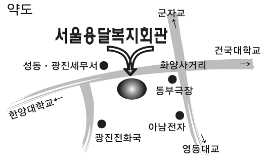

협회 주요업무
검사정비사업소
부대복지사업 추진 근거
- 화물자동차 운수사업법 제34조(협회의 사업) 제1호
- 화물자동차운수사업의 건전한 발전과 운수사업자간의 공동이익을 도모하는 사업
- 정관 제1조 (목 적) - 회원상호간의 친목과 복리증진
- 정관 제 5조(사업)5호 - 공동구입 및 부대사업
- 정관 제 10조(회원등의 의무)
- 정관 제 10조 3호 - 사업기금의 출연의 의무
- 정관 제 10조 4호 - 회원복지사업을 위한 기금납부의 의무
- 현 황
- 2002.12.01 제1기 자동차 정비, 주유사업 및 임대사업 개시
- 2008.06.27 제2기 자동차 검사정비사업 및 임대사업 개시
부대복지사업의 총괄개요
| 항 목 | 내 역 |
|---|---|
| 사업장의 소재지 | 서울특별시 성동구 광나루로 320-2 |
| 사업장의 규 모 | 지하1층~지상10층, 5,026,09㎡ |
| 사업의 종 류 | 자동차검사,정비사업, 임대사업 |
| 운 영 방 안 | 부대복지사업 규정에 따라 협회원에게 사업이익금 환원 |
1. 사업장의 위치
- 주 소
- 서울특별시 성동구 성동구 광나루로 320-2
- 약 도
-

2. 사업의 종류
- 검사정비사업소(1급)
- 2008. 6. 3 준공 / 2008. 6. 27. 개장
- 지하1층 : 자동차 정비사업소, - 지상1층 : 자동차 검사사업소
- 지상2층 : 관리사무실
- 3층~8층 : 임대사무실, - 9층~10층 : 주차장
3. 부대복지사업 운영방안
- 등록제에 의한 차량의 무제한 증가, 경기불황으로 인한 수송물동량 감소, 유가의 계속적 인상추세와 차량매연관련법 및 정책강화 등 협회원들의 영업환경이 날로 열악해져가는 현실을 협회는 직시하고 협회의 숙원사업인 자동차 정비사업을 추진하게 됨
- 노마진주의 에서 발생되는 운영의 적자부분은 협회가 보조하는 상호보완 방식으로 부대복지사업을 활성화시켜 회원들의 활용도를 제고 시킬 것임.